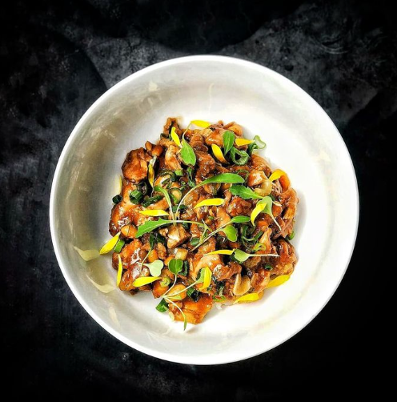
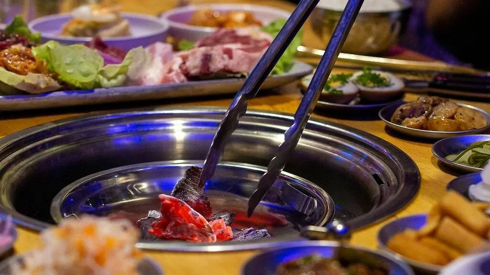
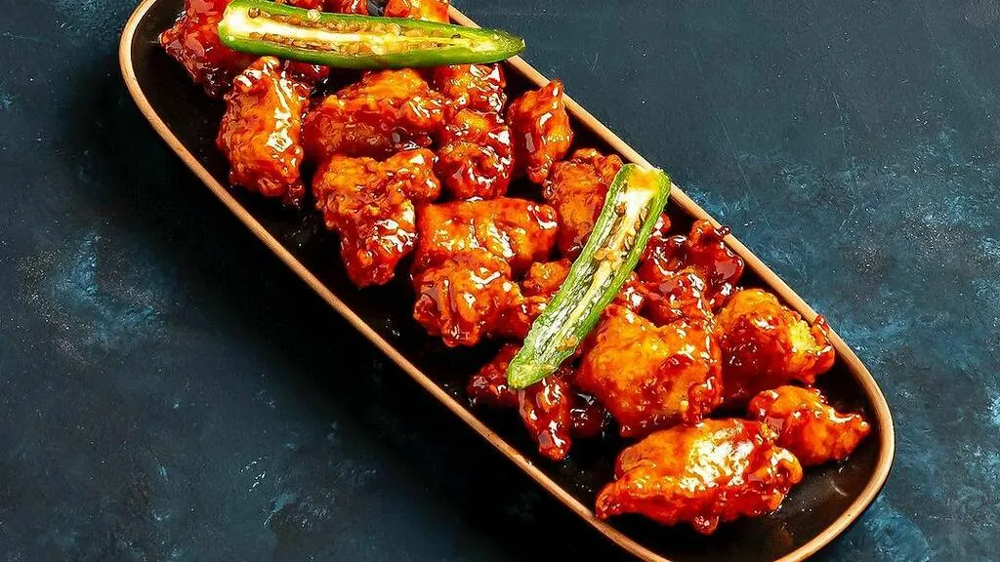

Mr. Ho! en Microcentro

Regenteado por una familia coreana, todos los platos del menú de Mr. Ho! son los grandes clásicos de Corea del Sur y tienen ese toque hogareño con el que realmente destacan. Súper abundantes y sin fallas, elijas lo que elijas vas a salir súper contento.
Na Num en Chacarita

Uno de los restaurantes de Buenos Aires recomendado por la Guía Michelin, a cargo de Marina Lis Ra, líder absoluta de la nueva ola de gastronomía coreana en Argentina. Con muchos platos tradicionales reversionados en un micro-local, se postula como el lugar más original para los que buscan preparaciones con una vueltita de tuerca.
Kyopo
En este restaurante, Pablo Park fusiona cocinas callejeras con toques de sudeste asiático y Europa.
KBBQ Korean Barbecue en Palermo
Otro de los grandes clásicos de la gastronomía coreana es la parrilla que, al contrario de lo que los argentinos estamos acostumbrados, el grill está instalado en la mesa y cada uno va cocinando los diferentes ingredientes. Con una propuesta súper variada de banchan (platitos con diversos ingredientes y arroz) el precio por persona se justifica por la gran diversidad y volumen de comida.
Kikiriki en Paternal
Así como el kimchi, el pollo frito es una de las preparaciones que se convirtieron en parte del ADN de la gastronomía coreana. Transformándose en un clásico del after office y en toda una comfort food; su versatilidad es absoluta y propone diferentes sabores que se adaptan a todos los gustos.
Kimchi Garden en Microcentro

Una de las últimas novedades en la gastronomía coreana de Buenos Aires, regentado por una mamá y sus dos hijas, quienes tienen una propuesta muy interesante de dosirak (viandas de almuerzo que tienen arroz, una proteína y seis acompañamientos). Es decir, ideales para comer algo y seguir caminando el centro porteño.
Una canción coreana en Flores

Quizá uno de los restaurantes más populares y conocidos para quienes aman la gastronomía coreana. Una canción coreana es uno de esos puntos foodies que pasó de ser un lugar de nicho y el predilecto de la comunidad, para convertirse en un hot spot de gran popularidad entre quienes quieren conocer un poco más sobre los platos típicos de Corea del Sur.